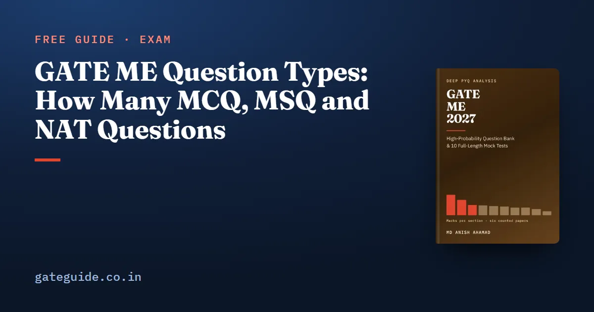

GATE ME Question Types: How Many MCQ, MSQ and NAT Questions

In the six GATE ME papers from 2022 to 2026, between 20 and 26 questions in every paper were NATs, and MSQs fell from 8 in 2023 to none in 2026. The rest were MCQs. This guide teaches the three question types through that record and shows, with numbers, what each type means for guessing and negative marks.
In this guide
Key takeaways
- MCQ, MSQ and NAT counts: 35/6/24 in both 2022 sets, 32/8/25 in 2023, 39/2/24 in 2024, 38/1/26 in 2025, 45/0/20 in 2026.
- 143 of the 330 technical questions in the six papers were NATs; 23 were MSQs.
- Every MSQ and every NAT was in a technical subject; all General Aptitude questions were MCQs.
- Only MCQs carry negative marks.
- A blind guess on an MCQ has an expected value of exactly zero.
- The fall in MSQs is a pattern across four institutes, not a published rule.
The three types, defined
A multiple-choice question (MCQ) gives four options with exactly one correct. A wrong answer costs one third of the question's marks.
A multiple-select question (MSQ) gives four options with one or more correct. You score only if you pick every correct option and no wrong one. There is no partial credit and no negative mark.
A numerical-answer type (NAT) question gives no options. You type a number, and it scores if it falls inside the range the official key accepts. There is no negative mark.
Remember: A NAT has no options to check against, so a correct method with careless arithmetic scores nothing. The marks are in finishing the calculation.
What six papers actually set
The counts come from the official answer keys of each paper, which record every question's type.
| Paper | Organiser | MCQ | MSQ | NAT |
|---|---|---|---|---|
| 2022 S1 | IIT Kharagpur | 35 | 6 | 24 |
| 2022 S2 | IIT Kharagpur | 35 | 6 | 24 |
| 2023 | IIT Kanpur | 32 | 8 | 25 |
| 2024 | IISc Bengaluru | 39 | 2 | 24 |
| 2025 | IIT Roorkee | 38 | 1 | 26 |
| 2026 | IIT Guwahati | 45 | 0 | 20 |
Each row sums to 65. The ten General Aptitude questions in each paper were all MCQs, so the technical questions carried every MSQ and every NAT.
Where the NATs sit, subject by subject
| Subject | Questions | MCQ | MSQ | NAT |
|---|---|---|---|---|
| Materials, Manufacturing and Metrology | 68 | 32 | 6 | 30 |
| Engineering Mathematics | 54 | 35 | 2 | 17 |
| Thermodynamics and Applications | 32 | 13 | 0 | 19 |
| Fluid Mechanics | 30 | 16 | 4 | 10 |
| Heat Transfer | 29 | 11 | 2 | 16 |
| Theory of Machines and Vibrations | 28 | 16 | 0 | 12 |
| Mechanics of Materials | 27 | 8 | 5 | 14 |
| Industrial Engineering | 25 | 14 | 0 | 11 |
| Engineering Mechanics | 22 | 10 | 2 | 10 |
| Machine Design | 15 | 9 | 2 | 4 |
Thermodynamics and Applications had more NATs than MCQs. Materials, Manufacturing and Metrology had the most NATs of any subject: cutting forces, tool life, solidification times and forming loads are typed as numbers.
Trap: Treating manufacturing as a reading subject. Thirty of its 68 counted questions were numerical answers, so it needs as much pen practice as thermodynamics.
What the marking means for guessing
Negative marking changes the arithmetic of a guess. The expected value of an action is what it earns on average: each outcome's marks times its probability, added up.
Worked example: a blind guess on an MCQ
On a one-mark MCQ, a blind guess is right with probability and wrong with probability . A right answer earns 1 and a wrong one costs :
The same holds for a two-mark MCQ: . A blind guess gains nothing on average and adds risk.
Now rule out one option you are sure is wrong. The guess is right with probability . On a one-mark question, , a small positive gain. On a two-mark question it is . Rule out two options and the one-mark value rises to .
In one line: Never guess an MCQ blind; guess only after eliminating at least one option with certainty. Never leave a NAT blank once you have a number.
For an MSQ, there is no negative mark, so an attempt never costs you. But a single wrong tick scores zero. Judge each option as a separate true-or-false statement before you look at how many you have ticked.
Why MSQs fell, and what not to conclude
From 2023 to 2026, under four different institutes, each paper set fewer MSQs than the one before: 8, 2, 1, 0. It is the one run in the whole record that moved the same way four papers in a row.
It is still a choice of format by four setting panels, not a change of rule. IIT Madras sets 2027 and set none of the six counted papers. Know how an MSQ is marked, and do not plan on any particular count, including zero.
One more caution from the keys: every technical MCQ in the 2026 paper, all 35, had (A) as its key. That is what the institute printed, and it tells a 2027 candidate nothing about which letter to expect.
How to practise each type
- NAT: finish every calculation to a number, then check units and the order of magnitude. Practise on the GATE virtual calculator so typing is not slow on the day.
- MCQ: for each option, find one reason it is right or wrong. Leave a pure guess blank.
- MSQ: prove or break each option in one line. Do not over-train it.
- General Aptitude: all MCQ in the counted papers, so the same negative marking applies; the General Aptitude guide covers the method.
The marking rules are common to every GATE paper; the marking scheme guide, written for CSE but valid for ME, states them. For how your net marks become a GATE score, see the score calculation guide. The book's question bank gives every NAT an acceptance band, so you can tell whether your rounding would have scored, in the GATE ME 2027 book.
Quick revision
- MCQ/MSQ/NAT: 35/6/24 (2022 S1 and S2), 32/8/25, 39/2/24, 38/1/26, 45/0/20.
- NATs: 20 to 26 a paper; 143 of 330 technical questions.
- MSQs: 8, 2, 1, 0 from 2023 to 2026; still a valid format.
- Only MCQs carry negative marks: −1/3 and −2/3.
- A blind MCQ guess has expected value zero; eliminating one option makes it positive.
- MSQ: no partial credit, no negative mark.
- Manufacturing and thermodynamics are NAT-heavy; practise with a pen.
Frequently asked questions
How many NAT questions come in GATE ME?
In the six counted papers from 2022 to 2026, between 20 and 26 of the 65 questions were NATs: 24, 24, 25, 24, 26 and 20. Across the six papers, 143 of the 330 technical questions were NATs. Every NAT was in a technical subject; General Aptitude had none. The 2027 count is not published in advance.
Are there MSQ questions in GATE ME 2027?
The format is still part of GATE, but it has become rare in the ME paper. The counted papers set 6 in each 2022 set, 8 in 2023, then 2 in 2024, 1 in 2025 and none in 2026. That fall was a choice by four different setting institutes, not a rule change, so prepare for a few or none.
Is there negative marking for NAT in GATE ME?
No. NAT questions carry no negative marking, and neither do MSQs. Only MCQs lose marks for a wrong answer: one third of a mark on a one-mark question and two thirds on a two-mark question. So once you have a number for a NAT, always enter it.
Should I guess MCQs in GATE ME?
A blind guess among four options has an expected value of zero under GATE's negative marking, so it gains nothing on average and adds risk. If you can rule out one option for certain, the expected value turns positive. Guess only after eliminating at least one option you are sure is wrong.
Which GATE ME subject has the most NAT questions?
Materials, Manufacturing and Metrology, with 30 NATs among its 68 counted questions. Thermodynamics and Applications had 19 NATs out of 32, the highest share of any subject, and Heat Transfer 16 out of 29. These subjects must be practised with a pen, not just read.
Sources
- GATE 2027 official website (IIT Madras)
- GATE 2026 ME answer key (IIT Guwahati)
- GATE 2025 ME answer key (IIT Roorkee)
Dates, fees and the syllabus are set by the GATE 2027 organising institute and can change. Always confirm at gate2027.iitm.ac.in.